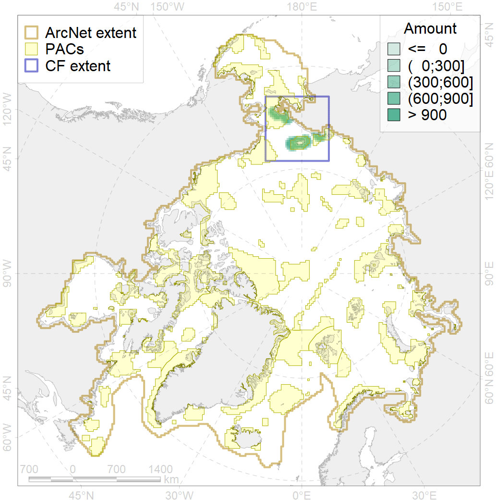
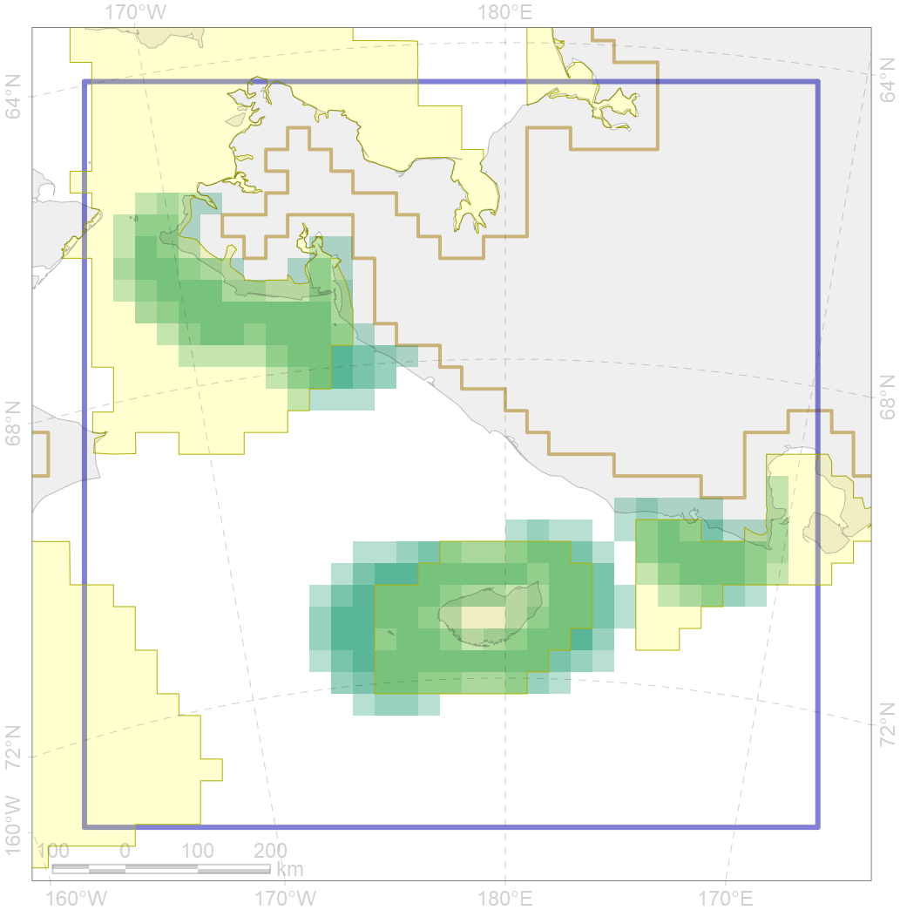

6105

| CF code | 6105 |
| CF name | Thick-billed murre (Uria lomvia hecheri) breeding colonies buffer feeding area |
| Time Period | 1950-2017 |
| Source(s) | Stishov et al 1991, Kondratuev 1997. Konyukhov et al., 1998, Ramsar sites 2001, Gavrilo et al 2011, Chronicle of nature… 2018 |
| Seasonality | May-September |
| Depth Horizon | ≥0 m |
| Methodology | Buffer around colonies |
| Use Restrictions | Open source |
| Author Name | Gavrilo, Tertitski |
| Notes | |
| Scenario’s Target | 0.36 |
| Target Achievement | 0.730 (Scenario: 202.7%) |
| PAC | Share of the Total Amount within the PAC | Share of the Target Achievement for the ArcNet | PAC’s Contribution to the Target Achievement |
|---|---|---|---|
| 5 | 28.6%29.2% | 78.5%79.9% | 38.7%39.4% |
| 6 | 0.0%0.1% | 0.0%0.3% | 0.0%0.1% |
| 7 | 34.5% | 93.8% | 46.3% |
| 8 | 12.1%12.1% | 23.7%23.7% | 11.7%11.7% |
| inner | 75.2%75.9% | 196.0%197.7% | 96.7%97.5% |
| outer | 24.8%27.9% | 6.7%15.4% | 3.3%7.6% |
| † supplement values are for area consistence whereas principal values are for Accenter compatible gridded stats |